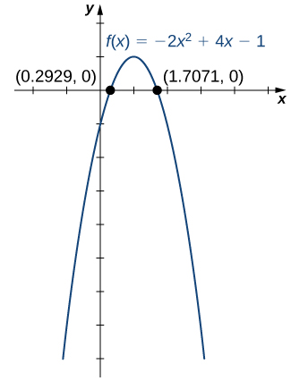
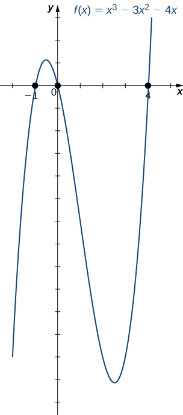

Section 1.5 Basic Classes of Functions: Part B, Polynomials and Rational Functions
Learning Objectives.
Recognize the degree of a polynomial.
Find the roots of a quadratic polynomial.
Describe the graphs of basic odd and even polynomial functions.
Identify a rational function.
Describe the graphs of power and root functions.
Explain the difference between algebraic and transcendental functions.
Graph a piecewise-defined function.
Sketch the graph of a function that has been shifted, stretched, or reflected from its initial graph position.
We have studied the general characteristics of functions, so now let's examine some specific classes of functions. In Part A. we began by reviewing the basic properties of linear fucntions. Now we look at quadratic functions, and then generalize to include higher-degree polynomials. By combining root functions with polynomials, we can define general algebraic functions and distinguish them from the transcendental functions we examine later in this chapter. We finish the section with examples of piecewise-defined functions and take a look at how to sketch the graph of a function that has been shifted, stretched, or reflected from its initial form. Note: This is the second half of section 1.2 in the original form of OpenStax Calculus.
Subsection 1.5.1 Polynomials
A linear function is a special type of a more general class of functions: polynomials. A polynomial function is any function that can be written in the form
for some integer \(n\geq 0 \) and constants \(a_n,a_{n-1}, \dots ,a_0,\) where \(a_n\neq 0 .\) In the case when \(n= 0 ,\) we allow for \(a_0= 0 ;\) if \(a_0= 0 ,\) the function \(f(x)= 0 \) is called the zero function. The value \(n\) is called the degree of the polynomial; the constant \(a_n\) is called the leading coefficient. A linear function of the form \(f(x)=mx+b\) is a polynomial of degree 1 if \(m\neq 0 \) and degree 0 if \(m= 0 .\) A polynomial of degree 0 is also called a constant function. A polynomial function of degree 2 is called a quadratic function. In particular, a quadratic function has the form \(f(x)=ax^2 +bx+c,\) where \(a\neq 0 .\) A polynomial function of degree \(3 \) is called a cubic function.
Subsubsection 1.5.1.1 Power Functions
Some polynomial functions are power functions. A power function is any function of the form \(f(x)=ax^b ,\) where \(a\) and \(b\) are any real numbers. The exponent in a power function can be any real number, but here we consider the case when the exponent is a positive integer. (We consider other cases later.) If the exponent is a positive integer, then \(f(x)=ax^n\) is a polynomial. If \(n\) is even, then \(f(x)=ax^n\) is an even function because \(f(-x)=a(-x)^n=ax^n\) if \(n\) is even. If \(n\) is odd, then \(f(x)=ax^n\) is an odd function because \(f(-x)=a(-x)^n=-ax^n\) if \(n\) is odd (Figure 1.64).
!["An image of two graphs. Both graphs have an x axis that runs from -4 to 4 and a y axis that runs from -6 to 7. The first graph is labeled “a” and is of two functions. The first function is “f(x) = x to the 4th”, which is a parabola that decreases until the origin and then increases again after the origin. The second function is “f(x) = x squared”, which is a parabola that decreases until the origin and then increases again after the origin, but increases and decreases at a slower rate than the first function. The second graph is labeled “b” and is of two functions. The first function is “f(x) = x to the 5th”, which is a curved function that increases until the origin, becomes even at the origin, and then increases again after the origin. The second function is “f(x) = x cubed”, which is a curved function that increases until the origin, becomes even at the origin, and then increases again after the origin, but increases at a slower rate than the first function."](external/CNX_Calc_Figure_01_02_004.jpg)
Subsubsection 1.5.1.2 Behavior at Infinity
To determine the behavior of a function \(f\) as the inputs approach infinity, we look at the values \(f(x)\) as the inputs, \(x,\) become larger. For some functions, the values of \(f(x)\) approach a finite number. For example, for the function \(f(x)= 2 + 1 /x,\) the values \(1 /x\) become closer and closer to zero for all values of \(x\) as they get larger and larger. For this function, we say "\(f(x)\) approaches two as \(x\) goes to infinity," and we write \(f(x)\to 2 \) as \(x\to \infty.\) The line \(y= 2 \) is a horizontal asymptote for the function \(f(x)= 2 + 1 /x\) because the graph of the function gets closer to the line as \(x\) gets larger.
For other functions, the values \(f(x)\) may not approach a finite number but instead may become larger for all values of \(x\) as they get larger. In that case, we say "\(f(x)\) approaches infinity as \(x\) approaches infinity," and we write \(f(x)\to \infty\) as \(x\to \infty.\) For example, for the function \(f(x)= 3 x^2 ,\) the outputs \(f(x)\) become larger as the inputs \(x\) get larger. We can conclude that the function \(f(x)= 3 x^2 \) approaches infinity as \(x\) approaches infinity, and we write \(3 x^2 \to \infty\) as \(x\to \infty.\) The behavior as \(x\to -\infty\) and the meaning of \(f(x)\to -\infty\) as \(x\to \infty\) or \(x\to -\infty\) can be defined similarly. We can describe what happens to the values of \(f(x)\) as \(x\to \infty\) and as \(x\to -\infty\) as the end behavior of the function.
To understand the end behavior for polynomial functions, we can focus on quadratic and cubic functions. The behavior for higher-degree polynomials can be analyzed similarly. Consider a quadratic function \(f(x)=ax^2 +bx+c.\) If \(a\gt 0 ,\) the values \(f(x)\to \infty\) as \(x\to \pm\infty.\) If \(a\lt 0 ,\) the values \(f(x)\to -\infty\) as \(x\to \pm\infty.\) Since the graph of a quadratic function is a parabola, the parabola opens upward if \(a\gt 0 ;\) the parabola opens downward if \(a\lt 0 .\) (See Figure 1.65(a).)
Now consider a cubic function \(f(x)=ax^3 +bx^2 +cx+d.\) If \(a\gt 0 ,\) then \(f(x)\to \infty\) as \(x\to \infty\) and \(f(x)\to -\infty\) as \(x\to -\infty.\) If \(a\lt 0 ,\) then \(f(x)\to -\infty\) as \(x\to \infty\) and \(f(x)\to \infty\) as \(x\to -\infty.\) As we can see from both of these graphs, the leading term of the polynomial determines the end behavior. (See Figure 1.65(b).)
!["An image of two graphs. The first graph is labeled “a” and has an x axis that runs from -4 to 5 and a y axis that runs from -4 to 6. The graph contains two functions. The first function is “f(x) = -(x squared) - 4x -4”, which is a parabola. The function increasing until it hits the maximum at the point (-2, 0) and then begins decreasing. The x intercept is at (-2, 0) and the y intercept is at (0, -4). The second function is “f(x) = 2(x squared) -12x + 16”, which is a parabola. The function decreases until it hits the minimum point at (3, -2) and then begins increasing. The x intercepts are at (2, 0) and (4, 0) and the y intercept is not shown. The second graph is labeled “b” and has an x axis that runs from -4 to 3 and a y axis that runs from -4 to 6. The graph contains two functions. The first function is “f(x) = -(x cubed) - 3(x squared) + x + 3”. The graph decreases until the approximate point at (-2.2, -3.1), then increases until the approximate point at (0.2, 3.1), then begins decreasing again. The x intercepts are at (-3, 0), (-1, 0), and (1, 0). The y intercept is at (0, 3). The second function is “f(x) = (x cubed) -3(x squared) + 3x - 1”. It is a curved function that increases until the point (1, 0), where it levels out. After this point, the function begins increasing again. It has an x intercept at (1, 0) and a y intercept at (0, -1)."](external/CNX_Calc_Figure_01_02_005.jpg)
Subsubsection 1.5.1.3 Zeros of Polynomial Functions
Another characteristic of the graph of a polynomial function is where it intersects the \(x\)-axis. To determine where a function \(f\) intersects the \(x\)-axis, we need to solve the equation \(f(x)= 0 \) for the case of the linear function \(f(x)=mx+b,\) the \(x\)-intercept is given by solving the equation \(mx+b= 0 .\) In this case, we see that the \(x\)-intercept is given by \((-b/m, 0 ).\) In the case of a quadratic function, finding the \(x\)-intercept(s) requires finding the zeros of a quadratic equation: \(ax^2 +bx+c= 0 .\) In some cases, it is easy to factor the polynomial \(ax^2+bx+c\) to find the zeros. If not, we make use of the quadratic formula.
Note 1.66. Rule: The Quadratic Formula.
Consider the quadratic equation
where \(a\neq 0 .\) The solutions of this equation are given by the quadratic formula
If the discriminant \(b^2− 4 ac\gt 0 ,\) this formula tells us there are two real numbers that satisfy the quadratic equation. If \(b^2− 4 ac= 0 ,\) this formula tells us there is only one solution, and it is a real number. If \(b^2− 4 ac\lt 0 ,\) no real numbers satisfy the quadratic equation.
In the case of higher-degree polynomials, it may be more complicated to determine where the graph intersects the \(x\)-axis. In some instances, it is possible to find the \(x\)-intercepts by factoring the polynomial to find its zeros. In other cases, it is impossible to calculate the exact values of the \(x\)-intercepts. However, as we see later in the text, in cases such as this, we can use analytical tools to approximate (to a very high degree) where the \(x\)-intercepts are located. Here we focus on the graphs of polynomials for which we can calculate their zeros explicitly.
Example 1.67. Graphing Polynomial Functions.
For the following functions a. and b., i. describe the behavior of \(f(x)\) as \(x\to \pm\infty,\) ii. find all zeros of \(f,\) and iii. sketch a graph of \(f.\)
\(\displaystyle f(x)= −2 x^2 + 4 x− 1 \)
\(\displaystyle f(x)=x^3 − 3 x^2 − 4 x\)
-
The function \(f(x)= −2 x^2 + 4 x− 1 \) is a quadratic function.
Because \(a= −2 \lt 0 ,\text{ as } x\to \pm\infty,f(x)\to -\infty.\)
-
To find the zeros of \(f,\) use the quadratic formula. The zeros are
\begin{equation*} x= \frac{ −4 \pm \sqrt{ 4^2− 4 ( −2 )( −1 )}}{ 2 ( −2 )}= \frac{ −4 \pm \sqrt{ 8 }}{ −4 }= \frac{ −4 \pm 2 \sqrt{ 2 }}{ −4 }=\frac{ 2 \pm \sqrt{ 2 }}{ 2 }. \end{equation*} -
To sketch the graph of \(f,\) use the information from your previous answers and combine it with the fact that the graph is a parabola opening downward.

-
The function \(f(x)=x^3 − 3 x^2 − 4 x\) is a cubic function.
Because \(a= 1 \gt 0 ,\text{ as } x\to \infty,f(x)\to \infty.\) As \(x\to -\infty,f(x)\to -\infty.\)
-
To find the zeros of \(f,\) we need to factor the polynomial. First, when we factor \(x\) out of all the terms, we find
\begin{equation*} f(x)=x(x^2 − 3 x− 4 ). \end{equation*}Then, when we factor the quadratic function \(x^2 − 3 x− 4 ,\) we find
\begin{equation*} f(x)=x(x− 4 )(x+ 1 ). \end{equation*}Therefore, the zeros of \(f\) are \(x= 0 , 4 , −1 .\)
Combining the results from parts i. and ii., draw a rough sketch of \(f.\)

Checkpoint 1.68.
Consider the quadratic function \(f(x)= 3 x^2 − 6 x+ 2 .\) Find the zeros of \(f.\) Does the parabola open upward or downward?
Subsection 1.5.2 Algebraic Functions
By allowing for quotients and fractional powers in polynomial functions, we create a larger class of functions. An algebraic function is one that involves addition, subtraction, multiplication, division, rational powers, and roots. Two types of algebraic functions are rational functions and root functions.
Just as rational numbers are quotients of integers, rational functions are quotients of polynomials. In particular, a rational function is any function of the form \(f(x)=p(x) /q(x),\) where \(p(x)\) and \(q(x)\) are polynomials. For example,
are rational functions. A root function is a power function of the form \(f(x)= x^{1/n},\) where \(n\) is a positive integer greater than one. For example, \(f(x)=x^{1/2}=\sqrt{x}\) is the square-root function and \(g(x)=x^{1/3}=\sqrt[3]{x}\) is the cube-root function. By allowing for compositions of root functions and rational functions, we can create other algebraic functions. For example, \(f(x)=\sqrt{ 4 −x^2 }\) is an algebraic function.
Example 1.69. Finding Domain and Range for Algebraic Functions.
For each of the following functions, find the domain and range.
\(\displaystyle f(x)=\frac{ 3 x− 1}{ 5 x+ 2 }\)
\(\displaystyle f(x)\sqrt{4-x^2}\)
-
It is not possible to divide by zero, so the domain is the set of real numbers \(x\) such that \(x\neq - 2 / 5 .\) To find the range, we need to find the values \(y\) for which there exists a real number \(x\) such that
\begin{equation*} y=\frac{ 3 x− 1}{ 5 x+ 2 }. \end{equation*}When we multiply both sides of this equation by \(5 x+ 2 ,\) we see that \(x\) must satisfy the equation
\begin{equation*} 5 xy+ 2 y= 3 x− 1 . \end{equation*}From this equation, we can see that \(x\) must satisfy
\begin{equation*} 2 y+ 1 =x( 3 − 5 y). \end{equation*}If \(y= 3 / 5 ,\) this equation has no solution. On the other hand, as long as \(y\neq 3 / 5 ,\)
\begin{equation*} x=\frac{ 2 y+ 1 }{ 3 − 5 y} \end{equation*}satisfies this equation. We can conclude that the range of \(f\) is \(\{y|y\neq 3 / 5 \}.\)
-
To find the domain of \(f,\) we need \(4 −x^2 \geq 0 .\) When we factor, we write \(4 −x^2 =( 2 −x)( 2 +x)\geq 0 .\) This inequality holds if and only if both terms are positive or both terms are negative. For both terms to be positive, we need to find \(x\) such that
\begin{equation*} 2 −x\geq 0 \text{ and } 2 +x\geq 0 . \end{equation*}These two inequalities reduce to \(2 \geq x\) and \(x\geq −2 .\) Therefore, the set \(\{x|− 2 \leq x\leq 2 \}\) must be part of the domain. For both terms to be negative, we need
\begin{equation*} 2 −x\leq 0 \text{ and } 2 +x\geq 0 . \end{equation*}These two inequalities also reduce to \(2 \leq x\) and \(x\geq −2 .\) There are no values of \(x\) that satisfy both of these inequalities. Thus, we can conclude the domain of this function is \(\{x|− 2 \leq x\leq 2 \}.\) If \(−2 \leq x\leq 2 ,\) then \(0 \leq 4 −x^2 \leq 4 .\) Therefore, \(0 \leq \sqrt{ 4 −x^2 }\leq 2 ,\) and the range of \(f\) is \(\{y| 0 \leq y\leq 2 \}.\)
Checkpoint 1.70.
Find the domain and range for the function \(f(x)=( 5 x+ 2 ) /( 2 x− 1 ).\)
The root functions \(f(x)= x^{1/n}\) have defining characteristics depending on whether \(n\) is odd or even. For all even integers \(n\geq 2 ,\) the domain of \(f(x)= x^{1/n}\) is the interval \([ 0 ,\infty).\) For all odd integers \(n\geq 1 ,\) the domain of \(f(x)= x^{1/n}\) is the set of all real numbers. Since \(x^{1/n}=-(-x)^{1/n}\) for odd integers \(n,f(x)= x^{1/n}\) is an odd function if \(n\) is odd. See the graphs of root functions for different values of \(n\) in Figure 1.71.
!["An image of two graphs. The first graph is labeled “a” and has an x axis that runs from -2 to 9 and a y axis that runs from -4 to 4. The first graph is of two functions. The first function is “f(x) = square root of x”, which is a curved function that begins at the origin and increases. The second function is “f(x) = x to the 4th root”, which is a curved function that begins at the origin and increases, but increases at a slower rate than the first function. The second graph is labeled “b” and has an x axis that runs from -8 to 8 and a y axis that runs from -4 to 4. The second graph is of two functions. The first function is “f(x) = cube root of x”, which is a curved function that increases until the origin, becomes vertical at the origin, and then increases again after the origin. The second function is “f(x) = x to the 5th root”, which is a curved function that increases until the origin, becomes vertical at the origin, and then increases again after the origin, but increases at a slower rate than the first function."](external/CNX_Calc_Figure_01_02_022.jpg)
Example 1.72. Finding Domains for Algebraic Functions.
For each of the following functions, determine the domain of the function.
\(\displaystyle f(x)=\frac{ 3}{ x^2 − 1 }\)
\(\displaystyle f(x)=\frac{ 2 x+ 5}{ 3 x^2 + 4 }\)
\(\displaystyle f(x)=\sqrt{ 4 − 3 x}\)
\(\displaystyle f(x)=\sqrt[3]{2 x− 1}\)
You cannot divide by zero, so the domain is the set of values \(x\) such that \(x^2 − 1 \neq 0 .\) Therefore, the domain is \(\{x|x\neq \pm 1 \}.\)
You need to determine the values of \(x\) for which the denominator is zero. Since \(3 x^2 + 4 \geq 4 \) for all real numbers \(x,\) the denominator is never zero. Therefore, the domain is \((-\infty,\infty).\)
Since the square root of a negative number is not a real number, the domain is the set of values \(x\) for which \(4 − 3 x\geq 0 .\) Therefore, the domain is \(\{x|x\leq 4 / 3 \}.\)
The cube root is defined for all real numbers, so the domain is the interval \((-\infty,\infty)\)
Checkpoint 1.73.
Find the domain for each of the following functions: \(f(x)=( 5 − 2 x) /(x^2 + 2 )\) and \(g(x)=\sqrt{ 5 x− 1 }.\)
Subsection 1.5.3 Transcendental Functions
Thus far, we have discussed algebraic functions. Some functions, however, cannot be described by basic algebraic operations. These functions are known as transcendental functions because they are said to “transcend,” or go beyond, algebra. The most common transcendental functions are exponential and logarithmic functions. An exponential function is a function of the form \(f(x)=b^x,\) where the base \(b\gt 0 ,b\neq 1 .\) A logarithmic function is a function of the form \(f(x)=\log_b(x)\) for some constant \(b\gt 0 ,b\neq 1 ,\) where \(\log_b(x)=y\) if and only if \(b^y=x.\) (We also discuss exponential and logarithmic functions later in the chapter.)
Example 1.74. Classifying Algebraic and Transcendental Functions.
Classify each of the following functions, a. through c., as algebraic or transcendental.
\(\displaystyle f(x)=\frac{\sqrt{x^3 + 1 }}{ 4 x+ 2 }\)
\(\displaystyle f(x)=2^{x^2}\)
\(\displaystyle f(x)=\ln(2x) \)
Since this function involves basic algebraic operations only, it is an algebraic function.
This function cannot be written as a formula that involves only basic algebraic operations, so it is transcendental. (Note that algebraic functions can only have powers that are rational numbers.)
As in part b., this function cannot be written using a formula involving basic algebraic operations only; therefore, this function is transcendental.
Checkpoint 1.75.
Is \(f(x)=x / 2 \) an algebraic or a transcendental function?
Algebraic
Subsection 1.5.4 Piecewise-Defined Functions
Sometimes a function is defined by different formulas on different parts of its domain. A function with this property is known as a piecewise-defined function. The absolute value function is an example of a piecewise-defined function because the formula changes with the sign of \(x\text{:}\)
Other piecewise-defined functions may be represented by completely different formulas, depending on the part of the domain in which a point falls. To graph a piecewise-defined function, we graph each part of the function in its respective domain, on the same coordinate system. If the formula for a function is different for \(x\lt a\) and \(x\gt a,\) we need to pay special attention to what happens at \(x=a\) when we graph the function. Sometimes the graph needs to include an open or closed circle to indicate the value of the function at \(x=a.\) We examine this in the next example.
Example 1.76. Graphing a Piecewise-Defined Function.
Sketch a graph of the following piecewise-defined function:
Graph the linear function \(y=x+ 3 \) on the interval \((-\infty, 1 )\) and graph the quadratic function \(y=(x− 2 )^2\) on the interval \([ 1 ,\infty).\) Since the value of the function at \(x= 1 \) is given by the formula \(f(x)=(x− 2 )^2,\) we see that \(f( 1 )= 1 .\) To indicate this on the graph, we draw a closed circle at the point \(( 1 , 1 ).\) The value of the function is given by \(f(x)=x+ 2 \) for all \(x\lt 1 ,\) but not at \(x= 1 .\) To indicate this on the graph, we draw an open circle at \(( 1 , 4 ).\)
!["An image of a graph. The x axis runs from -7 to 5 and the y axis runs from -4 to 6. The graph is of a function that has two pieces. The first piece is an increasing line that ends at the open circle point (1, 4) and has the label “f(x) = x + 3, for x \lt 1”. The second piece is parabolic and begins at the closed circle point (1, 1). After the point (1, 1), the piece begins to decrease until the point (2, 0) then begins to increase. This piece has the label “f(x) = (x - 2) squared, for x \gt = 1”.The function has x intercepts at (-3, 0) and (2, 0) and a y intercept at (0, 3)."](external/CNX_Calc_Figure_01_02_011.jpg)
Checkpoint 1.78.
Sketch a graph of the function
Example 1.79. Parking Fees Described by a Piecewise-Defined Function.
In a big city, drivers are charged variable rates for parking in a parking garage. They are charged $10 for the first hour or any part of the first hour and an additional $2 for each hour or part thereof up to a maximum of $30 for the day. The parking garage is open from 6 a.m. to 12 midnight.
Write a piecewise-defined function that describes the cost \(C\) to park in the parking garage as a function of hours parked \(x.\)
Sketch a graph of this function \(C(x).\)
Since the parking garage is open 18 hours each day, the domain for this function is \(\{x| 0 \lt x\leq 18 \}.\) The cost to park a car at this parking garage can be described piecewise by the function
\begin{equation*} C(x)=\begin{cases} 10 \amp 0 \lt x\leq 1 \\ 12 \amp 1 \lt x\leq 2 \\ 14 \amp 2 \lt x\leq 3 \\ 16 \amp 3 \lt x\leq 4 \\ \vdots \\ 30 \amp 10 \lt x\leq 18 \end{cases}. \end{equation*}- The graph of the function consists of several horizontal line segments.
!["An image of a graph. The x axis runs from 0 to 18 and is labeled “x, hours”. The y axis runs from 0 to 32 and is labeled “y, cost in dollars”. The function consists 11 pieces, all horizontal line segments that begin with an open circle and end with a closed circle. The first piece starts at x = 0 and ends at x = 1 and is at y = 10. The second piece starts at x = 1 and ends at x = 2 and is at y = 12. The third piece starts at x = 2 and ends at x = 3 and is at y = 14. The fourth piece starts at x = 3 and ends at x = 4 and is at y = 16. The fifth piece starts at x = 4 and ends at x = 5 and is at y = 18. The sixth piece starts at x = 5 and ends at x = 6 and is at y = 20. The seventh piece starts at x = 6 and ends at x = 7 and is at y = 22. The eighth piece starts at x = 7 and ends at x = 8 and is at y = 24. The ninth piece starts at x = 8 and ends at x = 9 and is at y = 26. The tenth piece starts at x = 9 and ends at x = 10 and is at y = 28. The eleventh piece starts at x = 10 and ends at x = 18 and is at y = 30."](external/CNX_Calc_Figure_01_02_013.jpg)
Checkpoint 1.80.
The cost of mailing a letter is a function of the weight of the letter. Suppose the cost of mailing a letter is \(49 \text{ cents }\) for the first ounce and \(21 \text{ cents }\) for each additional ounce. Write a piecewise-defined function describing the cost \(C\) as a function of the weight \(x\) for \(0 \lt x\leq 3 ,\) where \(C\) is measured in cents and \(x\) is measured in ounces.
Subsection 1.5.5 Transformations of Functions
We have seen several cases in which we have added, subtracted, or multiplied constants to form variations of simple functions. In the previous example, for instance, we subtracted 2 from the argument of the function \(y=x^2 \) to get the function \(f(x)=(x− 2 )^2.\) This subtraction represents a shift of the function \(y=x^2 \) two units to the right. A shift, horizontally or vertically, is a type of transformation of a function. Other transformations include horizontal and vertical scalings, and reflections about the axes.
A vertical shift of a function occurs if we add or subtract the same constant to each output \(y.\) For \(c\gt 0 ,\) the graph of \(f(x)+c\) is a shift of the graph of \(f(x)\) up \(c\) units, whereas the graph of \(f(x)−c\) is a shift of the graph of \(f(x)\) down \(c\) units. For example, the graph of the function \(f(x)=x^3 + 4 \) is the graph of \(y=x^3 \) shifted up \(4 \) units; the graph of the function \(f(x)=x^3 − 4 \) is the graph of \(y=x^3 \) shifted down \(4 \) units (Figure 1.81).
!["An image of two graphs. The first graph is labeled “a” and has an x axis that runs from -4 to 4 and a y axis that runs from -1 to 10. The graph is of two functions. The first function is “f(x) = x squared”, which is a parabola that decreases until the origin and then increases again after the origin. The second function is “f(x) = (x squared) + 4”, which is a parabola that decreases until the point (0, 4) and then increases again after the origin. The two functions are the same in shape, but the second function is shifted up 4 units. The second graph is labeled “b” and has an x axis that runs from -4 to 4 and a y axis that runs from -5 to 6. The graph is of two functions. The first function is “f(x) = x squared”, which is a parabola that decreases until the origin and then increases again after the origin. The second function is “f(x) = (x squared) - 4”, which is a parabola that decreases until the point (0, -4) and then increases again after the origin. The two functions are the same in shape, but the second function is shifted down 4 units."](external/CNX_Calc_Figure_01_02_023.jpg)
A horizontal shift of a function occurs if we add or subtract the same constant to each input \(x.\) For \(c\gt 0 ,\) the graph of \(f(x+c)\) is a shift of the graph of \(f(x)\) to the left \(c\) units; the graph of \(f(x−c)\) is a shift of the graph of \(f(x)\) to the right \(c\) units. Why does the graph shift left when adding a constant and shift right when subtracting a constant? To answer this question, let’s look at an example.
Consider the function \(f(x)=|x+ 3 |\) and evaluate this function at \(x− 3 .\) Since \(f(x− 3 )=|x|\) and \(x− 3 \lt x,\) the graph of \(f(x)=|x+ 3 |\) is the graph of \(y=|x|\) shifted left 3 units. Similarly, the graph of \(f(x)=|x− 3 |\) is the graph of \(y=|x|\) shifted right \(3 \) units (Figure 1.82).
!["An image of two graphs. The first graph is labeled “a” and has an x axis that runs from -8 to 5 and a y axis that runs from -3 to 5. The graph is of two functions. The first function is “f(x) = absolute value of x”, which decreases in a straight line until the origin and then increases in a straight line again after the origin. The second function is “f(x) = absolute value of (x + 3)”, which decreases in a straight line until the point (-3, 0) and then increases in a straight line again after the point (-3, 0). The two functions are the same in shape, but the second function is shifted left 3 units. The second graph is labeled “b” and has an x axis that runs from -5 to 8 and a y axis that runs from -3 to 5. The graph is of two functions. The first function is “f(x) = absolute value of x”, which decreases in a straight line until the origin and then increases in a straight line again after the origin. The second function is “f(x) = absolute value of (x - 3)”, which decreases in a straight line until the point (3, 0) and then increases in a straight line again after the point (3, 0). The two functions are the same in shape, but the second function is shifted right 3 units."](external/CNX_Calc_Figure_01_02_015.jpg)
A vertical scaling of a graph occurs if we multiply all outputs \(y\) of a function by the same positive constant. For \(c\gt 0 ,\) the graph of the function \(cf(x)\) is the graph of \(f(x)\) scaled vertically by a factor of \(c.\) If \(c\gt 1 ,\) the values of the outputs for the function \(cf(x)\) are larger than the values of the outputs for the function \(f(x);\) therefore, the graph has been stretched vertically. If \(0 \lt c\lt 1 ,\) then the outputs of the function \(cf(x)\) are smaller, so the graph has been compressed. For example, the graph of the function \(f(x)= 3 x^2 \) is the graph of \(y=x^2 \) stretched vertically by a factor of 3, whereas the graph of \(f(x)=x^2 / 3 \) is the graph of \(y=x^2 \) compressed vertically by a factor of \(3 \) (Figure 1.83).
!["An image of two graphs. The first graph is labeled “a” and has an x axis that runs from -3 to 3 and a y axis that runs from -2 to 9. The graph is of two functions. The first function is “f(x) = x squared”, which is a parabola that decreases until the origin and then increases again after the origin. The second function is “f(x) = 3(x squared)”, which is a parabola that decreases until the origin and then increases again after the origin, but is vertically stretched and thus increases at a quicker rate than the first function. The second graph is labeled “b” and has an x axis that runs from -4 to 4 and a y axis that runs from -2 to 9. The graph is of two functions. The first function is “f(x) = x squared”, which is a parabola that decreases until the origin and then increases again after the origin. The second function is “f(x) = (1/3)(x squared)”, which is a parabola that decreases until the origin and then increases again after the origin, but is vertically compressed and thus increases at a slower rate than the first function."](external/CNX_Calc_Figure_01_02_024.jpg)
The horizontal scaling of a function occurs if we multiply the inputs \(x\) by the same positive constant. For \(c\gt 0 ,\) the graph of the function \(f(cx)\) is the graph of \(f(x)\) scaled horizontally by a factor of \(c.\) If \(c\gt 1 ,\) the graph of \(f(cx)\) is the graph of \(f(x)\) compressed horizontally. If \(0 \lt c\lt 1 ,\) the graph of \(f(cx)\) is the graph of \(f(x)\) stretched horizontally. For example, consider the function \(f(x)=\sqrt{ 2 x}\) and evaluate \(f\) at \(x / 2 .\) Since \(f(x / 2 )=\sqrt{x},\) the graph of \(f(x)=\sqrt{ 2 x}\) is the graph of \(y=\sqrt{x}\) compressed horizontally. The graph of \(y=\sqrt{x / 2 }\) is a horizontal stretch of the graph of \(y=\sqrt{x}\) (Figure 1.84).
!["An image of two graphs. Both graphs have an x axis that runs from -2 to 4 and a y axis that runs from -2 to 5. The first graph is labeled “a” and is of two functions. The first graph is of two functions. The first function is “f(x) = square root of x”, which is a curved function that begins at the origin and increases. The second function is “f(x) = square root of 2x”, which is a curved function that begins at the origin and increases, but increases at a faster rate than the first function. The second graph is labeled “b” and is of two functions. The first function is “f(x) = square root of x”, which is a curved function that begins at the origin and increases. The second function is “f(x) = square root of (x/2)”, which is a curved function that begins at the origin and increases, but increases at a slower rate than the first function."](external/CNX_Calc_Figure_01_02_017.jpg)
We have explored what happens to the graph of a function \(f\) when we multiply \(f\) by a constant \(c\gt 0 \) to get a new function \(cf(x).\) We have also discussed what happens to the graph of a function \(f\) when we multiply the independent variable \(x\) by \(c\gt 0 \) to get a new function \(f(cx).\) However, we have not addressed what happens to the graph of the function if the constant \(c\) is negative. If we have a constant \(c\lt 0 ,\) we can write c as a positive number multiplied by \(−1 ;\) but, what kind of transformation do we get when we multiply the function or its argument by \(−1 ?\) When we multiply all the outputs by \(−1 ,\) we get a reflection about the \(x\)-axis. When we multiply all inputs by \(−1 ,\) we get a reflection about the \(y\)-axis. For example, the graph of \(f(x)=-(x^3 + 1 )\) is the graph of \(y=(x^3 + 1 )\) reflected about the \(x\)-axis. The graph of \(f(x)=(-x)^3>+ 1 \) is the graph of \(y=x^3 + 1 \) reflected about the \(y\)-axis (Figure 1.85).
!["An image of two graphs. Both graphs have an x axis that runs from -3 to 3 and a y axis that runs from -5 to 6. The first graph is labeled “a” and is of two functions. The first graph is of two functions. The first function is “f(x) = x cubed + 1”, which is a curved increasing function that has an x intercept at (-1, 0) and a y intercept at (0, 1). The second function is “f(x) = -(x cubed + 1)”, which is a curved decreasing function that has an x intercept at (-1, 0) and a y intercept at (0, -1). The second graph is labeled “b” and is of two functions. The first function is “f(x) = x cubed + 1”, which is a curved increasing function that has an x intercept at (-1, 0) and a y intercept at (0, 1). The second function is “f(x) = (-x) cubed + 1”, which is a curved decreasing function that has an x intercept at (1, 0) and a y intercept at (0, 1). The first function increases at the same rate the second function decreases for the same values of x."](external/CNX_Calc_Figure_01_02_018.jpg)
If the graph of a function consists of more than one transformation of another graph, it is important to transform the graph in the correct order. Given a function \(f(x),\) the graph of the related function \(y=cf(a(x+b))+d\) can be obtained from the graph of \(y=f(x)\) by performing the transformations in the following order.
Horizontal shift of the graph of \(y=f(x).\) If \(b\gt 0 ,\) shift left. If \(b\lt 0 ,\) shift right.
Horizontal scaling of the graph of \(y=f(x+b)\) by a factor of \(|a|.\) If \(a\lt 0 ,\) reflect the graph about the \(y\)-axis.
Vertical scaling of the graph of \(y=f(a(x+b))\) by a factor of \(|c|.\) If \(c\lt 0 ,\) reflect the graph about the \(x\)-axis.
Vertical shift of the graph of \(y=cf(a(x+b)).\) If \(d\gt 0 ,\) shift up. If \(d\lt 0 ,\) shift down.
We can summarize the different transformations and their related effects on the graph of a function in the following table.
| Transformation of \(f(c\gt 0 )\) | Effect on the graph of \(f\) |
|---|---|
| \(f(x)+c\) | Vertical shift up \(c\) units |
| \(f(x)−c\) | Vertical shift down \(c\) units |
| \(f(x+c)\) | Shift left by \(c\) units |
| \(f(x−c)\) | Shift right by \(c\) units |
| \(cf(x)\) | Vertical stretch if \(c\gt 1 ;\)vertical compression if \(0 \lt c\lt 1 \) |
| \(f(cx)\) | Horizontal stretch if \(0 \lt c\lt 1 ;\) horizontal compression if \(c\gt 1 \) |
| \(-f(x)\) | Reflection about the \(x\)-axis |
| \(f(-x)\) | Reflection about the \(y\)-axis |
Example 1.87. Transforming a Function.
For each of the following functions, a. and b., sketch a graph by using a sequence of transformations of a well-known function.
\(\displaystyle f(x)=-|x+ 2 |− 3 \)
\(\displaystyle f(x)= 3 \sqrt{-x}+ 1 \)
- Starting with the graph of \(y=|x|,\) shift \(2 \) units to the left, reflect about the \(x\)-axis, and then shift down 3 units.
!["An image of a graph. The x axis runs from -7 to 7 and a y axis runs from -7 to 7. The graph contains four functions. The first function is “f(x) = absolute value of x” and is labeled starting function. It decreases in a straight line until the origin and then increases in a straight line again after the origin. The second function is “f(x) = absolute value of (x + 2)”, which decreases in a straight line until the point (-2, 0) and then increases in a straight line again after the point (-2, 0). The second function is the same shape as the first function, but is shifted left 2 units. The third function is “f(x) = -(absolute value of (x + 2))”, which increases in a straight line until the point (-2, 0) and then decreases in a straight line again after the point (-2, 0). The third function is the second function reflected about the x axis. The fourth function is “f(x) = -(absolute value of (x + 2)) - 3” and is labeled “transformed function”. It increases in a straight line until the point (-2, -3) and then decreases in a straight line again after the point (-2, -3). The fourth function is the third function shifted down 3 units."](external/CNX_Calc_Figure_01_02_019.jpg)
Figure 1.88. The function \(f(x)=-|x+ 2 |− 3 \) can be viewed as a sequence of three transformations of the function \(y=|x|.\) - Starting with the graph of \(y=\sqrt{x},\) reflect about the \(y\)-axis, stretch the graph vertically by a factor of 3, and move up 1 unit.
!["An image of a graph. The x axis runs from -7 to 7 and a y axis runs from -2 to 10. The graph contains four functions. The first function is “f(x) = square root of x” and is labeled starting function. It is a curved function that begins at the origin and increases. The second function is “f(x) = square root of -x”, which is a curved function that decreases until it reaches the origin, where it stops. The second function is the first function reflected about the y axis. The third function is “f(x) = 3(square root of -x)”, which is a curved function that decreases until it reaches the origin, where it stops. The third function decreases at a quicker rate than the second function. The fourth function is “f(x) = 3(square root of -x) + 1” and is labeled “transformed function”. Itis a curved function that decreases until it reaches the point (0, 1), where it stops. The fourth function is the third function shifted up 1 unit."](external/CNX_Calc_Figure_01_02_020.jpg)
Figure 1.89. The function \(f(x)= 3 \sqrt{-x}+ 1 \) can be viewed as a sequence of three transformations of the function \(y=\sqrt{x}.\)
Checkpoint 1.90.
Describe how the function \(f(x)=-(x+ 1 )^2− 4 \) can be graphed using the graph of \(y=x^2 \) and a sequence of transformations.
Use Table 1.86.
Shift the graph \(y=x^2 \) to the left 1 unit, reflect about the \(x\)-axis, then shift down 4 units.
Subsection 1.5.6 Key Concepts
The power function \(f(x)=x^n\) is an even function if \(n\) is even and \(n\neq 0 ,\) and it is an odd function if \(n\) is odd.
The root function \(f(x)=x^{1/n}\) has the domain \([ 0 ,\infty)\) if \(n\) is even and the domain \((-\infty,\infty)\) if \(n\) is odd. If \(n\) is odd, then \(f(x)= x^{1/n}\) is an odd function.
The domain of the rational function \(f(x)=p(x) /q(x),\) where \(p(x)\) and \(q(x)\) are polynomial functions, is the set of \(x\) such that \(q(x)\neq 0 .\)
Functions that involve the basic operations of addition, subtraction, multiplication, division, and powers are algebraic functions. All other functions are transcendental. Trigonometric, exponential, and logarithmic functions are examples of transcendental functions.
A polynomial function \(f\) with degree \(n\geq 1 \) satisfies \(f(x)\to \pm\infty\) as \(x\to \pm\infty.\) The sign of the output as \(x\to \infty\) depends on the sign of the leading coefficient only and on whether \(n\) is even or odd.
Vertical and horizontal shifts, vertical and horizontal scalings, and reflections about the \(x\)- and \(y\)-axes are examples of transformations of functions.
Subsection 1.5.7 Key Equations
Polynomial function \(f(x)=a_nx^n+a_{n-1}x^{n-1}+\cdots+a_1x+a_0\)
This book is a custom edition based on OpenStax Calculus Volume 1. You can download the original for free at https://openstax.org/details/books/calculus-volume-1. 1
Additional practice exercises are available in at the bottom on this section in OpenStax Calculus Volume 1: https://openstax.org/books/calculus-volume-1/pages/1-1-review-of-functions
https://openstax.org/details/books/calculus-volume-1